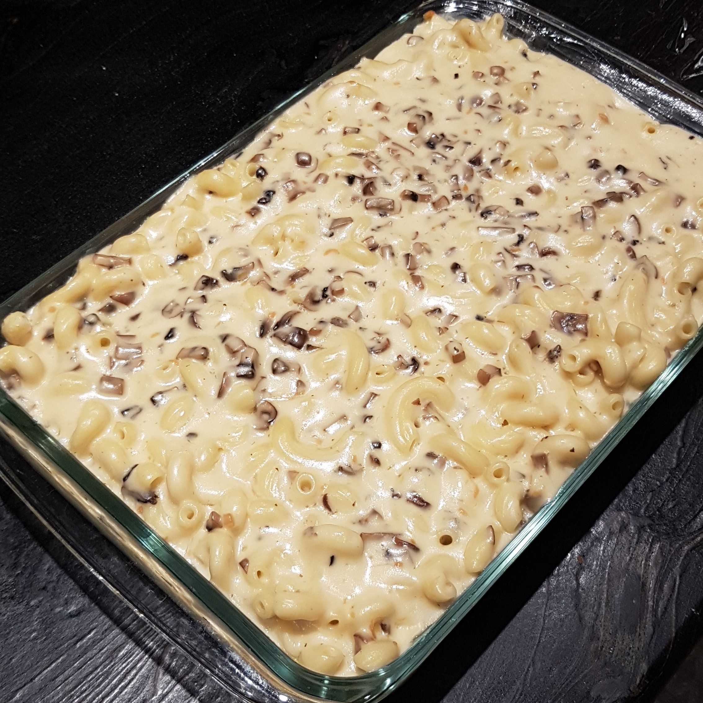
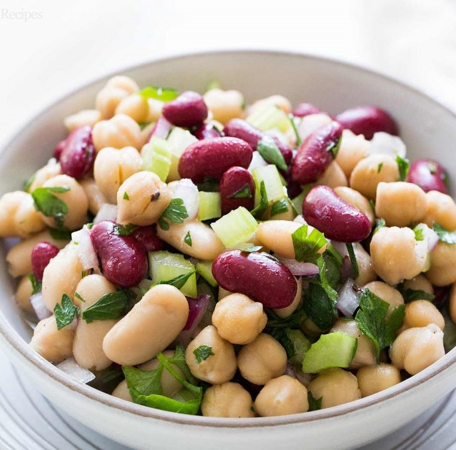

Four-Cheese Mushroom Macaroni

This macaroni is a great blend of rich creamy mac and cheese with earthy mushroom
accents. The recipe is quite simple and easy to tweak to personal preference should you wish to experiment with different cheeses.
Servings: 10-12 Servings
- 4&1/2 cups cavatappi (corkscrew macaroni)
- 8 tablespoons butter, divided
- 1/2 cup flour
- 5&1/2 cups milk, divided
- 2&1/2 cups smoked gouda
- 2 cups shredded sharp cheddar
- 1&1/2 cups shredded monterey jack
- 1&1/2 cups parmesan, divided
- 1/2 cup panko bread crumbs
- 1 tablespoon truffle oil
- 450g cremini mushrooms, chopped
- Pre-heat oven to 350F (175C).
- Butter a 9x13-inch casserole dish.
- Bring a stock pot of salted water to a boil over high heat. Reduce to medium-high heat and cook cavatappi, stirring occasionally, until al dante (~8 mins). Drain in colander and set aside.
- While the cavatappi is cooking, melt 2 tablespoons of butter in skillet over medium heat. Add mushrooms to skillet and cook until butter is infused (~5 mins).
- Heat empty stock pot over medium, adding remaining butter, flour, and 1&1/2 cups of milk. Stir mixture constantly until homogeneous and no flower clumps remain.
- Add remaining milk to stock pot and increase heat to medium high, stirring constantly making sure to scrape bottom and sides of pot, until milk is on the verge of boiling.
- Reduce heat to a simmer, add 1/2 tablespoon truffle oil and slowly add the four cheeses to the milk mixture, reserving 1/2cup of parmesan, stir until cheese is incorporated
- Fold cavatappi and mushrooms into cheese sauce until well mixed and coated. Pour mixture into casserole dish.
- Mix remaining parmesan with panko break crumbs and drizzle remaining truffle oil over mixture
- Place casserole dish on middle rack of oven, bake for 30 mins or until crust is golden brown
- Remove from oven and let rest for 10 mins, Serve hot.
Three Bean Salad

Looking for a healthy protein rich salad to go with your meal? Look no further
a three bean salad, quick to assemble and great for potlucks and home dinners alike!
Servings: 4-8 Servings
Salad:
- 1 (15-ounce) can cannellini beans, rinsed and drained
- 1 (15-ounce) can kidney beans, rinsed and drained
- 1 (15-ounce) can garbanzo beans(chickpeas), rinsed and drained
- 1/2 red onion, finely chopped and soaked
- 1 cup celery stalks, finely chopped
- 1 cup fresh parsley, finely chopped
- 1 teaspoon fresh rosemary, finely chopped
Dressing:
- 1/3 cup apple cider vinegar
- 1/4 cup granulated sugar (adjust to taste)
- 3 tablespoons extra virgin olive oil
- 1&1/2 teaspoons salt
- 1/4 teaspoon black pepper
- In a large salad bowl, mix all ingredient for salad.
- In a small bowl, whisk dressing ingredeitns together.
- Add dressing to salad, toss to mix.
- Cover bowl with cling wrap and refrigerate to allow dressing to infuse into beans. Serve at room temperature.